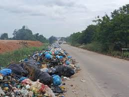
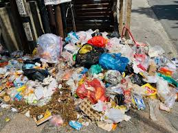

Riwayat Laporan
Semua
Menunggu
Proses
Selesai

Sedang Diproses
Tumpukan Sampah di Jl. Raden Intan
10 Jan 2026
Tanjung Karang Pusat

Selesai Dikemas
Sampah Liar dekat Pasar Bambu Kuning
08 Jan 2026
Enggal

Menunggu Verifikasi
Limbah Rumah Tangga Menumpuk
07 Jan 2026
Kedaton